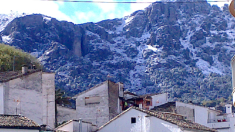

Lunes, 29 de Abril de 2013 12:05
Los mercurios están disparatados. En pocos días hemos pasado de superar los 25 grados en muchos puntos de la comarca Sierra de Cazorla, a rozar los 0 grados en los puntos más altos de la serranía en la noche de ayer.
No solo llovió durante todo el día, sino que a media tarde comenzó a nevar intensamente, una situación que se prolongó durante algo más de una hora y dejó una estampa completamente invernal en plena primavera.
Así, hasta las 14:00 horas de hoy y a pesar de que el cielo está parcialmente nublado, Aemet, tiene activada la alerta amarilla por nieve.

Además, este frente gélido, también viene acompañado de una borrasca que durante el día de ayer dejó muchas precipitaciones y se prevé que mañana deje algunas más. Hasta las 20:00 horas de ayer se habían recogido 16 litros por metro cuadrado en Cazorla.
Mañana los mercurios seguirán en la misma línea que hoy, aunque aumentarán un poco las máximas. Por el contrario las mínimas seguirán situadas en 3 grados. Los cielos continuarán nublados y la probabilidad de lluvia es de un 70 por ciento en las horas centrales del día.
El miércoles parece que habrá un significante cambio, no lloverá y los mercurios subirán hasta los 17 grados.